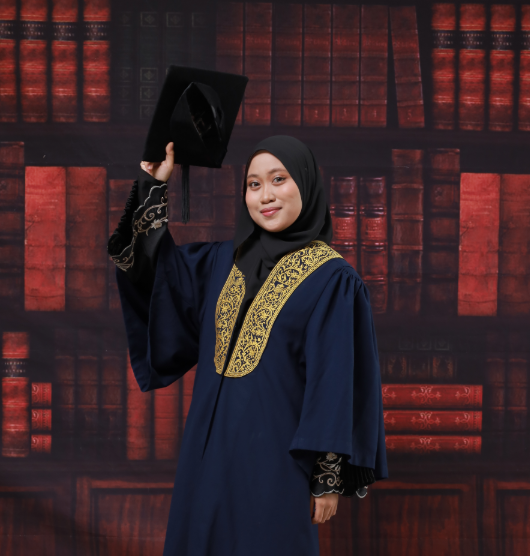

Available for internship opportunities
Building thoughtful
digital experiences.
Hi, I’m Siti Zulaikha Amni Binti Mohd Hudzori — a Bachelor of Computer Science (Hons.) Multimedia Computing student passionate about exploring technology, creativity and software development. I enjoy learning new skills and bringing ideas to life through practical projects.
Currently exploring web development

A little about me
Curiosity drives
everything I do.
I'm currently pursuing a Bachelor of Computer Science (Hons.) Multimedia Computing, where I get to explore both the technical and creative sides of technology.
I'm particularly interested in software development, mobile applications and creating digital experiences that are practical and user-friendly.
Throughout my studies, I've had the opportunity to work on different projects, from developing applications and websites to exploring game development and 3D modelling. I enjoy learning through hands-on experience, trying out new ideas and continuously improving my skills along the way.
My Academic Journey
Education & background.
A look at my educational journey and the experiences that have shaped my interest in technology.
My toolkit
Skills I bring to the table.
Tools and areas I’ve been learning, using and growing more confident with.
Selected work
Projects with purpose.
A few ideas brought to life through coursework, experimentation and collaboration.
Where I’ve contributed
Experience &
involvement.
Work, leadership and campus experiences that have shaped how I collaborate and solve problems.
Life beyond the classroom
Activities & engagements.
Exploring opportunities, connecting with people, and gaining experiences beyond academics.
Learning in progress
Certifications & milestones.
Courses and achievements that complement my academic journey.
Let’s connect
Ready to build
something meaningful?
I’m open to internship opportunities, project collaborations and conversations about technology. I’d love to hear from you.